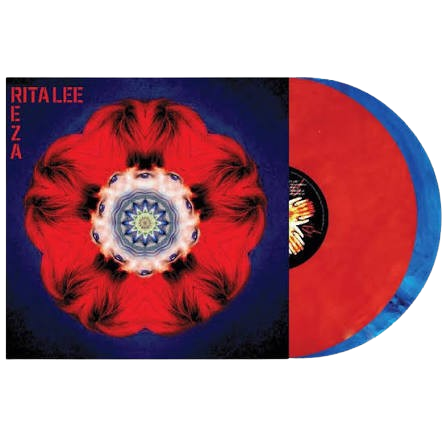

O álbum Transa, gravado por Caetano Veloso em Londres e lançado em janeiro de 1972, nasceu do exílio político imposto pela ditadura militar brasileira.
Valor:R$:103,90
O álbum homônimo Tribalistas nasceu de um encontro informal em 2001 e foi gravado em tempo recorde no Rio de Janeiro.
Valor:R$:100,50

Lançado em 30 de abril de 2012, Reza é o vigésimo primeiro e último álbum de estúdio da cantora e compositora Rita Lee, em parceria com o músico e compositor Roberto de Carvalho.
Valor:R$:150,00